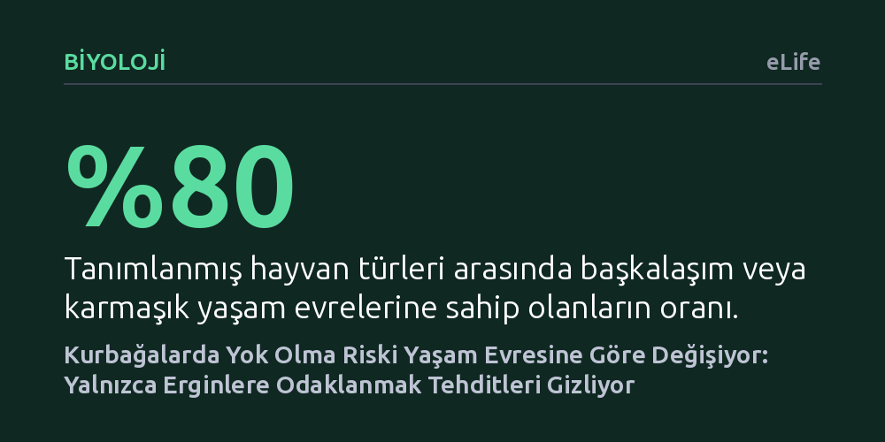

BIYOLOJI · eLife · 2026-09-08
Araştırmacılar, 299 Çin kurbağası türünün hem ergin hem iribaş özelliklerinin yok olma riskiyle ilişkisini inceledi. Vücut büyüklüğü her iki evrede de riski artırırken, durgun su iribaşlarının daha az tehlikeyle karşılaştığı ve ergin odaklı korumanın yetersiz kaldığı saptandı.
Tehlike altındaki türleri koruma planlarının neredeyse tamamen ergin bireylere göre yapıldığını, oysa larva evresinin kendine has tehditlerle türün geleceğini tek başına belirleyebileceğini gösteriyor.

Dünya genelinde biyoçeşitlilik hızla azalırken doğa koruma çabaları genellikle türlerin yetişkin bireylerine odaklanır. Bir kurbağa türünün tehlike altında olup olmadığı belirlenirken ergin bireyin boyuna, nerede yaşadığına ve popülasyon büyüklüğüne bakılır. Ancak doğada tanımlanmış hayvan türlerinin yüzde 80'inden fazlası doğrudan yetişkin olarak dünyaya gelmez; larva veya tırtıl gibi son derece farklı ara evrelerden geçer.
Kurbağalar bu durumun en somut örneğidir. Suda yaşayan, solungaçlarıyla nefes alan ve otçul beslenen bir iribaş ile karaya çıkan, akciğerli ve etçil bir ergin kurbağa aslında aynı canlının iki farklı dünyasıdır. Bu iki evrenin maruz kaldığı çevresel baskılar ve tehditler birbirinden bağımsız gelişebilir. Dolayısıyla yalnızca ergin bireye bakılarak hazırlanan koruma planları, türün gerçek kırılganlığını yanlış hesaplama riski taşır.
Araştırma ekibi, olağanüstü bir amfibi çeşitliliğine sahip olan Çin'deki 299 anuran (kuyruksuz kurbağa) türünü ele aldı. Çin Biyoçeşitlilik Kırmızı Listesi temel alınarak türlerin tehdit dereceleri belirlendi. Araştırmacılar, hem ergin bireylerin hem de belirli gelişim aşamasındaki (Gosner 32–40 evresi) iribaşların vücut boyutu, kafa yapısı ve bacak oranları gibi ayrıntılı morfolojik ölçümlerini veri tabanlarından çıkardı.
Canlıların sadece vücut oranları değil, tercih ettikleri mikrohabitatlar da incelendi. Erginlerin karasal, ağaçta veya toprak altında yaşaması ile iribaşların gölet gibi durgun sularda (lentik) ya da dereler gibi akıntılı sularda (lotik) bulunması sınıflandırıldı. Türler arasındaki akrabalık bağlarının istatistiksel sonuçları yanıltmasını önlemek için evrimsel soyağacını dikkate alan filogenetik karşılaştırmalı modeller kullanıldı.
Araştırmanın en net ortak bulgusu vücut boyutu oldu: Hem ergin kurbağalarda hem de iribaşlarda beden büyüdükçe yok olma riski belirgin şekilde artıyor. Büyük gövdeli kurbağalar insanlar tarafından gıda veya geleneksel tıp amacıyla daha fazla avlanıyor; aynı zamanda daha geniş alana ve besine ihtiyaç duydukları için yaşam alanı parçalanmasından daha sert etkileniyor. Ancak ergin boyutu ile iribaş boyutu arasında neredeyse hiçbir korelasyon bulunmuyor; yani iri bir kurbağanın iribaşı küçük, küçük bir kurbağanın iribaşı iri olabiliyor.
Yaşam alanına gelindiğinde ise iki evre arasında çarpıcı bir kopuş ortaya çıktı. Ergin kurbağanın hangi mikrohabita yaşadığı yok olma riskini anlamlı biçimde etkilemezken, iribaşın yaşadığı su ortamı doğrudan belirleyici oldu. Gölet ve su birikintisi gibi durgun sularda gelişen iribaşlara sahip türlerin yok olma riski, hızlı akan derelerde yaşayanlara kıyasla çok daha düşük çıktı. İnsan etkisindeki alanlarda şehir parkı göletleri korunabilirken, akarsu yataklarının bozulması dere iribaşlarını savunmasız bırakıyor.
Erginlerde dikkat çeken bir diğer bulgu ise baş ve kulak zarı oranlarıydı. Görece küçük kulak zarına sahip kurbağa türlerinin daha yüksek tehdit altında olduğu saptandı; bu durum kurbağaların üremek için sesli iletişime bağımlı olması ve insan kaynaklı gürültü kirliliğinin küçük zarlı türleri daha fazla maskelemesi hipoteziyle ilişkilendirildi. Ayrıca oransal olarak daha uzun kafaya sahip türlerin de daha yüksek risk taşıdığı gözlendi.
Elde edilen sonuçlar, türlerin farklı yaşam evrelerinde tamamen farklı tehditlerle yüzleştiğini açıkça ortaya koyuyor. Bugüne kadar yalnızca yetişkin kurbağaları korumaya odaklanan politikalar, iribaşların ölüm kalım mücadelesi verdiği su kütlelerini göz ardı ettiğinde başarısızlığa mahkûm kalıyor. Farklı evrelerdeki özelliklerin birbirinden bağımsız evrimleşmesi, koruma biyolojisinin de tek bir evreye sıkışıp kalamayacağını gösteriyor.
Bu ders sadece kurbağalar için değil; kelebeklerden böceklere, deniz kabuklularından balıklara kadar yaşam döngüsünde başkalaşım geçiren tüm hayvanlar için geçerli. Biyoçeşitlilik krizine karşı geliştirilen kırmızı listelerin ve koruma planlarının, canlıyı yumurtadan erginliğe kadar uzanan tüm yaşam evreleriyle birlikte değerlendirmesi gerekiyor.